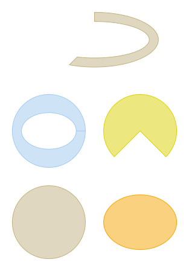

gdstk.ellipse¶
-
gdstk.ellipse(center, radius, inner_radius=None, initial_angle=0, final_angle=0, tolerance=0.01, layer=0, datatype=0) → gdstk.Polygon¶ Create an ellipse, circle, slice or ring.
- Parameters
center (coordinate pair or complex) – Circle/ellipse center.
radius (number or sequence) – Circle radius of the circle. A pair of numbers can be used to define an ellipse.
inner_radius (number or sequence) – If set, creates a ring.
initial_angle – Initial angle to define a slice.
final_angle – Final slice angle.
tolerance – Tolerance used for calculating the polygonal approximation of this shape.
layer – GDSII layer number assigned to this polygon.
datatype – GDSII data type number assigned to this polygon.
Examples
>>> circle = gdstk.ellipse((0, 0), 40) >>> ellipse = gdstk.ellipse((100, 0), (40, 30), layer=1) >>> ring = gdstk.ellipse((0, 100), 40, inner_radius=(30, 20), layer=2) >>> c_slice = gdstk.ellipse((100, 100), 40, ... initial_angle=-numpy.pi / 4, ... final_angle=5 * numpy.pi / 4, ... layer=3) >>> r_slice = gdstk.ellipse((50, 200), (70, 30), (60, 20), ... -3 * numpy.pi / 4, numpy.pi / 2, ... layer=4)